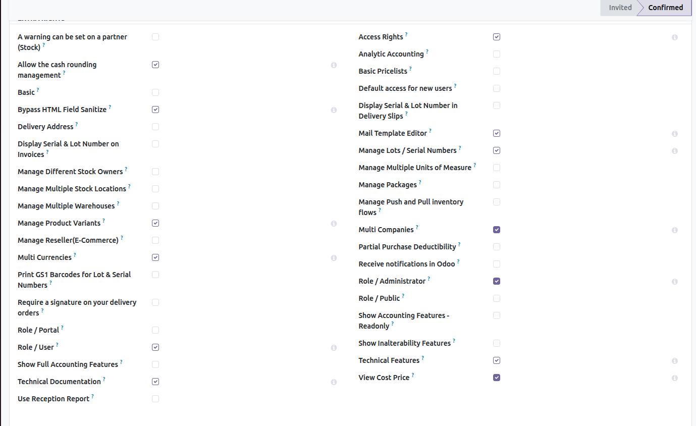
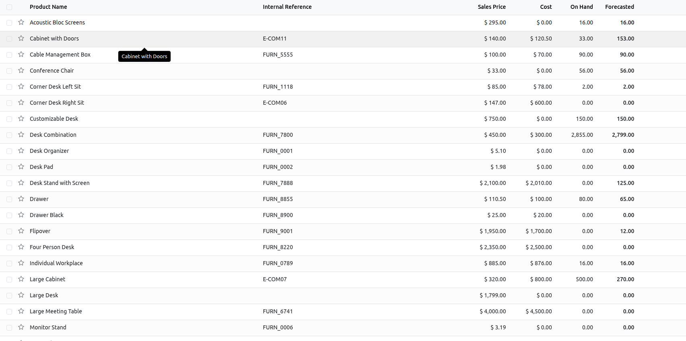

Inom Hide Product Cost Price module helps you protect sensitive pricing information by restricting access to the product cost price (standard_price) based on user permissions.
Product cost price is a critical business value and should only be visible to authorized users such as administrators or accountants. This module adds an additional security layer to ensure confidentiality and better role-based access control.
In many organizations, exposing product cost price to all users can lead to data leakage and internal conflicts. This module ensures that only authorized users can view cost prices, improving internal security and maintaining pricing confidentiality across departments.
1. Install the module.
2. A new security group “View Cost Price” is created automatically.
3. Assign this group to users who are allowed to see product cost prices.
4. Users without this group will not see the cost price field in product views.
Below are preview images demonstrating cost price visibility based on user permissions.


For support, bug reports, or customization requests, please contact us:
Email: info@inomerp.in
We provide a one-time setup and installation service completely free of cost on any Odoo-supported server. Our experienced technical team ensures proper installation, configuration, and deployment so you can start using the module smoothly without any technical complications.
Important Note:
Free support is provided for issues caused by the standard Odoo source code
related to this module. Any issues arising due to third-party modules,
custom developments, or compatibility conflicts are outside the scope of
free support and may be chargeable.
For demos, customization, or enterprise support, connect with our team: